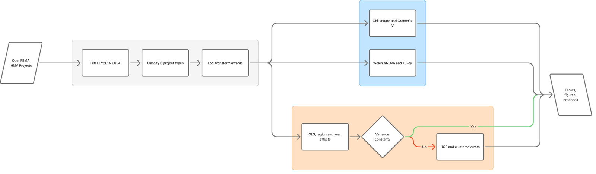
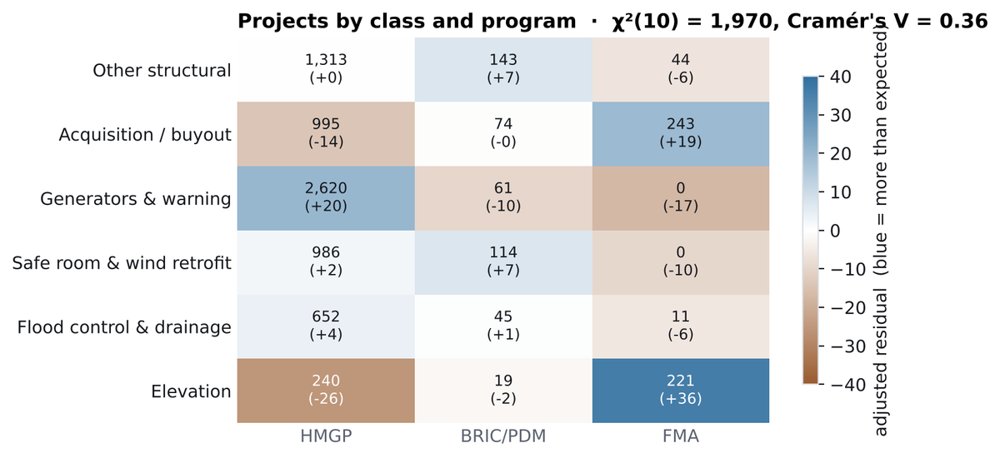
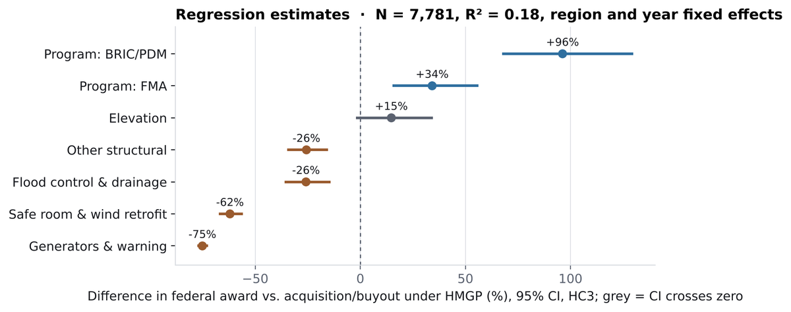
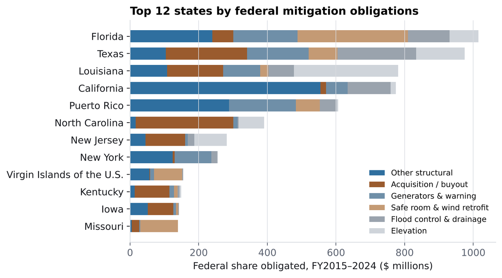
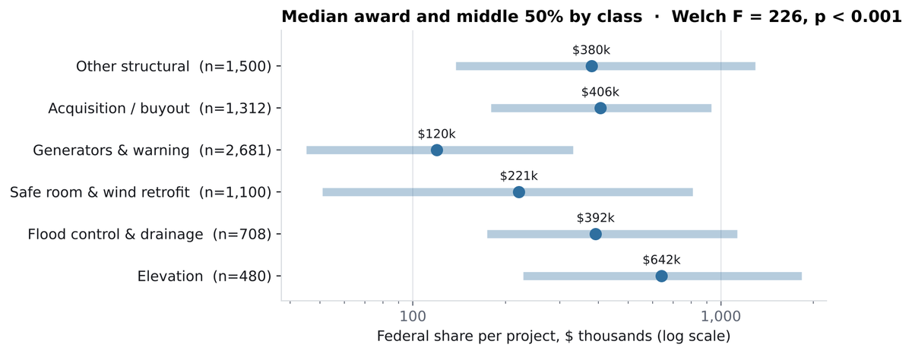

- $7.83B
federal share obligated across 7,781 projects. Florida, Texas, Louisiana, California and Puerto Rico together received 53% of it.
- V = 0.36
The project mix depends strongly on the program (χ²(10) = 1,970, p < 0.001). FMA is dominated by home elevations and buyouts, HMGP carries most generator and warning projects, and BRIC/PDM leans to safe rooms and other structural work.
- +96%
A BRIC/PDM award is about twice the size of an HMGP award for the same project type, region and year (95% CI +67% to +130%; holds with state-clustered errors, p = 0.001).


| Project class | Projects | Federal share ($M) | Share of total | Median award | Properties mitigated |
|---|---|---|---|---|---|
| Other structural | 1,500 | 2,345.7 | 30.0% | $379,791 | 11,534 |
| Acquisition / buyout | 1,312 | 1,575.8 | 20.1% | $406,129 | 8,451 |
| Generators & warning | 2,681 | 1,179.0 | 15.1% | $119,508 | 52 |
| Safe room & wind retrofit | 1,100 | 1,014.6 | 13.0% | $220,993 | 6,406 |
| Flood control & drainage | 708 | 904.7 | 11.6% | $392,115 | 280 |
| Elevation | 480 | 810.0 | 10.3% | $642,287 | 4,238 |
| Total | 7,781 | 7,829.8 | 100% | 30,961 |
| Term (vs. reference) | Effect | 95% CI (HC3) | p, HC3 | p, state-clustered |
|---|---|---|---|---|
| BRIC/PDM (vs. HMGP) | +96% | +67 to +130 | <0.001 | 0.001 |
| FMA (vs. HMGP) | +34% | +15 to +56 | <0.001 | 0.084 |
| Elevation (vs. buyout) | +15% | −2 to +35 | 0.090 | 0.230 |
| Flood control & drainage | −26% | −36 to −14 | <0.001 | 0.206 |
| Other structural | −26% | −35 to −15 | <0.001 | 0.073 |
| Safe room & wind retrofit | −62% | −67 to −56 | <0.001 | 0.030 |
| Generators & warning | −75% | −78 to −72 | <0.001 | <0.001 |
| Region 8, Mountain West (vs. Region 6, South Central) | −71% | −76 to −66 | <0.001 | <0.001 |
| Region 9, Pacific (vs. Region 6) | −2% | −16 to +15 | 0.832 | 0.958 |
N = 7,781; R² = 0.18; fiscal-year and FEMA-region fixed effects. Regions 1, 3, 4, 5, 7, 8 and 10 receive 46–71% smaller awards than Region 6 (Region 2: −20%). Max VIF 2.45. Breusch–Pagan LM = 430 (p < 0.001), so inference uses HC3 errors. Cost share is excluded because federal share is cost × cost share. Several project-type effects lose significance under state clustering, so treat them as descriptive.


Limits: these are grant records, not outcomes. They show where money went and for what, not whether it reduced later losses. That needs loss data such as NFIP claims or FEMA's National Risk Index joined at county level, which is the next step.